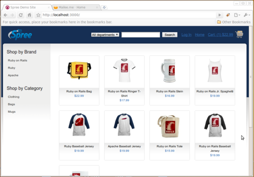
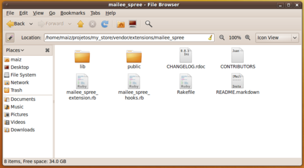
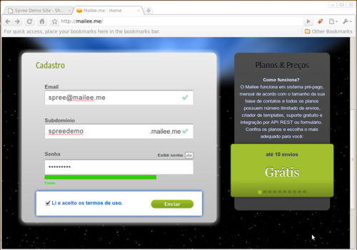
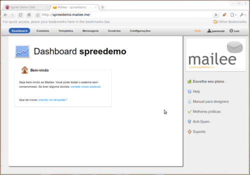
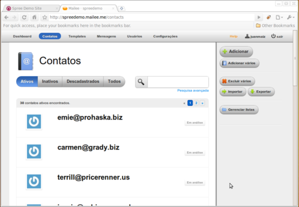
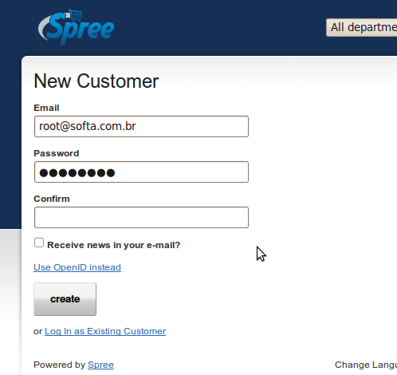
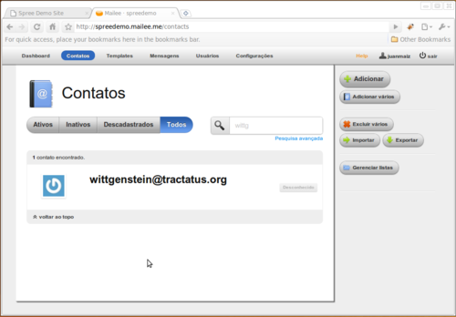

1 Requisitos
First things first. Para poder seguir este tutorial você precisará de algumas coisas instaladas em sua máquina. Basicamente você precisa do Ruby, do Rails e do Rubygems 1.3.6 instalado. Para quem usa Linux, isso é fácil, basta entrar no Synaptic e instalar. Se você usa o MacOS o Ruby já vem instalado por padrão, você precisa apenas instalar ou atualizar o Rails e o Rubygems. Já no windows são outros 500. Existe um instalador aqui , mas não sei se ele tem o Rubygems correto. Se alguém fizer o tutorial neste ambiente com sucesso, por favor, comente sobre como proceder.
2 Instalando o Spree
2.1 Instalando a gem
Uma vez com os requisitos instalados, instalamos o Spree. Abra o seu console e nele execute:
$ gem install spree
Uma série de plugins serão instalados.
2.2 Criando a estrutura da loja
Agora, você tem o comando “spree”, que permite a criação de uma loja. Vou chamar de “my_store”:
$ spree my_store
create
create CHANGELOG
create CONTRIBUTORS
create INSTALL
create LICENSE
create README.markdown
...
Está feito. Agora você já tem a loja criada, mas ela ainda não está configurada.
3 Configurando o Spree
3.1 Rodar um gems install just in case
Entre na pasta do projeto e rode o comando abaixo. Ele irá instalar todas as gems necessárias para rodar o spree. No meu caso, ele instalou apenas uma gem para autenticação com openid, mas isso dependerá das gems que você já tem. Este processo pode levar alguns minutos.
$ cd my_store
$ sudo rake gems:install
3.2 Editar o config/database.yml
Agora você precisa configurar o seu banco de dados. O Spree vêm com uma configuração padrão com o banco SQLite. Como aqui na empresa só usamos Postgres, segue a minha configuração:
development:
adapter: postgresql
encoding: unicode
database: my_store_development
username: my_store
production:
adapter: postgresql
encoding: unicode
database: my_store_production
username: my_store
test:
adapter: postgresql
encoding: unicode
database: my_store_production
username: my_store
3.3 Criar o usuário do banco
Agora vamos criar o usuário do banco. Como você viu na configuração, eu chamei ele de “my_store”. Eu vou criar o usuário entrando no meu usuário chamado postgres, pois só ele tem permissões para fazer isso, e usar o comando createuser:
$ sudo su postgres
$ createuser my_store
Ctrl+D para voltar ao usuário original
Como não poderei falar de todos os bancos neste tutorial, se você usa outro banco, ou trabalha com o Postgres de outra forma e está com dúvidas em como criar o usuário, entre em contato.
3.4 Criar o banco
Você pode criar o banco da forma que achar melhor. Eu acho mais prático usar o comando rake que já vem com o Rails:
$ rake db:create
Isso irá criar o banco de desenvolvimento (development). Para criar os outros bancos, basta passar um RAILS_ENV=env no comando, onde env poderá ser production, test ou o que você quiser usar.
3.5 Alimentar com alguns produtos iniciais
O banco está criado, mas ainda está vazio. Felizmente, o Spree tem um comando para popular o banco com dados fictícios, para que você possa já sair testando sua loja com clientes, produtos e pedidos (infelizmente, os pagamentos também são fictícios :D ).
Esse comando irá lhe perguntar algumas coisas. A primeira é que ele vai apagar os dados se eles já existirem na base. Como estamos iniciando a loja, isso não é um problema, escreva “y” e continue. Depois ele pergunta se você quer colocar dados no banco. Coloque “y” também. No fim ele irá perguntar pelo e-mail e senha do primeiro usuário administrador. Se você apenas der ENTER, ele criará um usuário “spree@example.com” com senha “spree”. Mas isso não é muito relevante por enquanto.
$ rake db:bootstrap
(in /home/maiz/projetos/my_store)
[find_by_param error] database not available?
This task will destroy any data in the database. Are you sure you want to
continue? [yn] y
== SpreeZeroNineZero: migrating ==============================================
-- create_table("addresses", {:force=>true})
NOTICE: CREATE TABLE will create implicit sequence "addresses_id_seq" for serial column "addresses.id"
NOTICE: CREATE TABLE / PRIMARY KEY will create implicit index "addresses_pkey" for table "addresses"
-> 0.1865s
...
loading fixture /var/lib/gems/1.8/gems/spree-0.10.2/db/default/states.yml
Default data has been loaded
Loading db/seeds.rb for each extension
Load Sample Data? [y]: y
loading fixture /var/lib/gems/1.8/gems/spree-0.10.2/db/sample/assets.yml
...
loading ruby /var/lib/gems/1.8/gems/spree-0.10.2/db/sample/users.rb
Create the admin user (press enter for defaults).
Email [spree@example.com]:
Password [spree]:
Sample data has been loaded
Bootstrap Complete.
3.6 Feito!
Concluímos a instalação e a configuração do Spree. Agora você pode iniciar o servidor:
$ script/server
E acessando http://localhost:3000 em seu navegador de preferência você já terá acesso à loja:

4 Instalando o MaileeSpree
4.1 Instale a extensão
Agora vamos instalar a extensão do Mailee para que sua loja esteja integrada ao e-mail marketing. O Spree tem a capacidade de instalar extensões diretamente do GitHub, que é justamente onde a nossa extensão está hospedada. Veja só!
$ script/extension install git://github.com/softa/mailee_spree
removing: /home/maiz/projetos/my_store/vendor/extensions/mailee_spree/.git
Initialized empty Git repository in /home/maiz/projetos/my_store/vendor/extensions/mailee_spree/.git/
remote: Counting objects: 19, done.
remote: Compressing objects: 100% (12/12), done.
remote: Total 19 (delta 1), reused 0 (delta 0)
Receiving objects: 100% (19/19), 18.56 KiB, done.
Resolving deltas: 100% (1/1), done.
Feito isto todos os arquivos da extensão devem estar em caminho_da_sua_loja/vendor/extensions/mailee_spree

4.2 Crie sua conta no Mailee
Se você ainda não tem uma conta no Mailee, acesse ele no http://mailee.me e cadastre-se. É bem fácil, basta apenas colocar seu e-mail, definir seu subdomínio e sua senha. Este subdomínio é o seu caminho no Mailee. No meu caso, criei um chamado “spreedemo”. Isso significa que sempre que eu for acessar a minha conta no Mailee, usarei o caminho http://spreedemo.mailee.me, mas ao se cadastrar você receberá um e-mail com este caminho caso tenha dúvidas. O Mailee também é muito preocupado com segurança e irá lhe informar se a senha que você escolheu é segura o suficiente. Aceite os termos de serviço, clique em “Enviar” e você estará automaticamente “logado” no Mailee.


4.3 Pegue a chave da API
Para usar a API o Mailee gera uma chave secreta para cada cliente. Tome muito cuidade com esta chave, ela é tão ou mais importante que a sua senha. Com ela, alguém mal intencionado poderá ter acesso aos seus clientes. Para pegar esta chave, vá em configuração, depois em integração e por fim em rest.


4.4 Configure a chave no environment.rb (ou no env que você achar melhor)
Copie o link inteiro e abra o arquivo config/environment.rb da sua loja no Spree e adicione a seguinte linha no final:
Mailee::Config.site = 'http://api.0x1xc4x5ebxax.spreedemo.mailee.me'
Não esqueça de colocar alí o link que você acabou de copiar.
Pronto. Agora a sua loja já está integrada com o Mailee. Vamos então ver como usar isso!
5 Usando o MaileeSpree
5.1 Enviando os clientes iniciais para o mailee
Se você já possui clientes na base de dados, vai precisar começar enviando estes para o Mailee. Como o Spree criou clientes fictícios para facilitar nossa vida, vamos ver se isso de fato funciona. O comando para fazer isso é o “mailee:send”. Execute ele com o operador “-D” para ver a descrição:
$ rake -D mailee:send
(in /home/maiz/projetos/my_store)
rake mailee:send
Sincroniza os items da tabela "users" com os contatos do Mailee.
Você pode também especificar o env AFTER para enviar apenas os contatos atualizados após uma data.
E.g. rake mailee:send CLASS=Contact AFTER=1.day
Então vamos lá:
$ rake mailee:send
(in /home/maiz/projetos/my_store)
Enviando
.............. (segue)
O Spree cria por padrão 501 usuários, então agora é uma boa hora para fazer aquele intervalo e tomar um café.
5.2 Após o café
Agora você pode voltar ao Mailee e dar uma olhada nos contatos.

Você deve estar se perguntando: Onde estão os 501 contatos? Só vejo X (onde X é aproximadamente 140). Bom, é que o Mailee tem um filtro no qual todo contato passa. Neste filtro verificamos uma série de coisas. Agora, se você entrar na aba “inativos”…
… os contatos que faltaram estarão lá. Como os dados do Spree são gerados aleatoriamente, a maioria dos domínios ou usuários de fato não existe e um envio para estes geraria um retorno, o que além de gerar um custo a mais para você, pode gerar problemas de entrega. Filtro esperto, hum?
5.3 Verificando a sincronização
Neste ponto você já deve estar um pouco mais acordado com o café. E já tem seus clientes antigos no Mailee. Bons momentos. Mas e os contatos novos? Bom, a extensão já pensou nisso. Sempre que um usuário se cadastrar em sua loja, ele estará automaticamente cadastrado no Mailee. Vamos então criar um usuário novo no Spree e ver se não estou mentindo. Mas não esqueça de reiniciar o server e executar as migrações se você não tiver feito isso após instalar a extensão.
$ rake db:migrate
$ script/server
Ao acessar o formulário você verá esta tela:

O Spree não possui por padrão um campo para que o usuário aceite receber mensagens (e.g. “Deseja receber notícias em seu email?”). A extensão criará na migração o campo “news” do tipo boolean na tabela de usuários e utilizará este campo para saber quais usuários enviar ou não para o Mailee. Se um usuário for cadastrado sem marcar, ele não será enviado para o Mailee, mas se, no futuro, ele marcar o campo, será adicionado corretamente. Da mesma forma, se um usuário estiver cadastrado e desmarcar este campo no futuro, ele será descadastrado do Mailee.
O campo já é apresentado corretamente com traduções para en-US (inglês) e pt-BR (português).
Uma vez preenchido o formulário e enviado, você poderá dar uma olhadinha no seu console (o que está rodando o servidor). Você verá algo assim:
Processing UsersController#create (for 127.0.0.1 at 2010-05-14 16:59:59) [POST]
Parameters: {"commit"=>"Create", "action"=>"create", "authenticity_token"=>"XFJroHBsMoFLCJRqYC3Z15c7U3hooDDiqZW09pWAH6U=", "controller"=>"users", "user"=>{"password_confirmation"=>"[FILTERED]", "openid_identifier"=>"", "password"=>"[FILTERED]", "email"=>"wittgenstein@tractatus.org"}}
AppConfiguration Load (1.0ms) SELECT * FROM "configurations" WHERE ("configurations"."name" = E'Default configuration') AND ( ("configurations"."type" = 'AppConfiguration' ) ) LIMIT 1
Cache hit: Spree::Config ({})
Cache hit: Spree::Config ({})
SQL (0.3ms) BEGIN
User Load (1.5ms) SELECT "users".id FROM "users" WHERE (LOWER("users"."email") = E'wittgenstein@tractatus.org') LIMIT 1
User Load (1.0ms) SELECT "users".id FROM "users" WHERE (LOWER("users"."login") = E'wittgenstein@tractatus.org') LIMIT 1
User Load (0.3ms) SELECT "users".id FROM "users" WHERE ("users"."persistence_token" = E'8b2211023b79864659e7ac4ebb1f51362a4d35e7ca1bcb741e71d9d0f55d7421ae9478d45da4bc69a561c84ded554b8326098e97b38d73474312837f34a84bf2') LIMIT 1
User Load (0.3ms) SELECT "users".id FROM "users" WHERE ("users"."single_access_token" = E'v0Qa6y_GX2QChPgilq4s') LIMIT 1
Role Load (0.3ms) SELECT * FROM "roles" WHERE ("roles"."name" = E'user') LIMIT 1
SQL (0.6ms) INSERT INTO "users" ("salt", "ship_address_id", "created_at", "single_access_token", "last_request_at", "bill_address_id", "crypted_password", "remember_token_expires_at", "updated_at", "perishable_token", "api_key", "failed_login_count", "current_login_ip", "openid_identifier", "current_login_at", "remember_token", "persistence_token", "login_count", "last_login_ip", "last_login_at", "login", "email") VALUES(E'zGIlvY3r9tI42OcWZ9ZC', NULL, '2010-05-14 20:00:00.115490', E'v0Qa6y_GX2QChPgilq4s', '2010-05-14 20:00:00.114477', NULL, E'f971f283985e15983c89b7d89e52837cdd77dc7f065b72462fed770850eb9aac7f2207597832f36577240e4837899bf95cad2fb265dbbfb050adf6a16cefc50a', NULL, '2010-05-14 20:00:00.115490', E'KxeobwPE_Sk-uczRtvqk', NULL, 0, E'127.0.0.1', NULL, '2010-05-14 19:59:59.922021', NULL, E'8b2211023b79864659e7ac4ebb1f51362a4d35e7ca1bcb741e71d9d0f55d7421ae9478d45da4bc69a561c84ded554b8326098e97b38d73474312837f34a84bf2', 1, NULL, NULL, E'wittgenstein@tractatus.org', E'wittgenstein@tractatus.org') RETURNING "id"
SQL (0.4ms) INSERT INTO "roles_users" ("role_id", "user_id") VALUES (2, 1068482858)
Criando contato no Mailee (542.0ms)
Como você pode ver na linha “Criando contato no Mailee”, a coisa parece ter funcionado. O tempo que a transação leva é o que aparece a direita.
Se houver algum problema com a criação do contato, isso não gerará nenhum problema em seu e-commerce, pois a extensão falha silenciosamente. Mas essa informação também constará no log. Aparecerá assim: “MAILEE-API: Falhou ao criar o contato 12345 no Mailee”. Onde 12345 é o id do usuário no seu banco do Spree.
Se você quiser poderá rodar novamente o comando rake mailee:send para atualizar os dados, utilizando o parâmetro AFTER para não precisar enviar todos novamente. Não se preocupe, o Mailee é esperto e não irá duplicar seus clientes, apenas atualizando os dados necessários corretamente.
Agora vamos ao Mailee ver se de fato o contato está lá.

Como você pode ver nesta segunda tela, o contato tem um “identificador”. Este é o campo em que o Mailee armazena o “id” do contado na sua loja. É por este campo que a integração sabe o que é novo e o que deve ser atualizado, por isso tome cuidado para não alterar o valor dele. Este campo também é útil caso você queira no futuro bater os dados do Mailee com sua base.
6 Colhendo os louros da vitória – por enquanto
Até aqui estamos bem. Criamos a loja e temos ela integrada com o Mailee. Agora você precisa publicar sua loja no mundo real e começar a fazer suas campanhas. Uma dica importante aqui é trabalhar bem com os dados do contatos. O Mailee possui um sistema poderoso de segmentação, para que você possa enviar exatamente o que o seu cliente quer receber.
Se ainda sobrou algum café, é uma boa hora para acabar com ele.